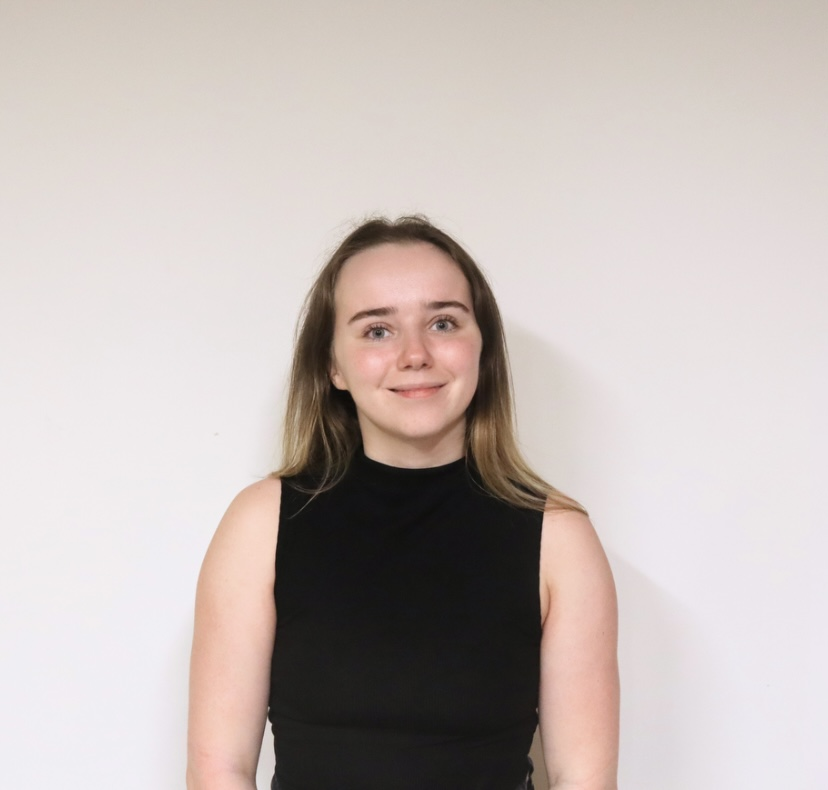

Team
Project Investigators

Markus Klein (PI):
Dr Markus Klein is a Professor of Human Development and Education Policy and currently Director of Research in the Institute of Education at the University of Strathclyde, a Fellow of the Higher Education Academy, and a Life Course Research Affiliate at the ARC Centre of Excellence for Children and Families over the Life Course at the University of Queensland. Previously he was a postdoctoral research fellow in the ‘Social Stratification and Education’ strand of the ESRC-funded research centre AQMeN (Applied Quantitative Methods Network). Markus obtained a PhD from the University of Mannheim, Germany. He studies how and why family socioeconomic status shapes individuals’ development and outcomes at various stages of the life course. His research appears in Sociological Science, Child Development, Sociology, British Journal of Sociology, European Sociological Review or Social Science Research.
Edward Sosu (Co-I):
Dr Edward Sosu is a Professor and Director of Research in the School of Education at the University of Glasgwo. He has a strong interest in quantitative methods and in addressing educational issues from a psychological perspective. His current research is predominantly focused on understanding how socioeconomic disadvantage influences educational and psychological trajectories from early childhood.Edward’s research interest cuts across high-, middle- and low-income country contexts. He was the lead author of the influential Joseph Rowntree Foundation report on Closing the Attainment Gap In Scottish Education. He has extensive experience of policy engagement and is keen to find ways that to enable research outcomes to make a difference to the lives of the most vulnerable in society.
Research Associates
Valentina Perinetti Casoni:
Valentina Perinetti Casoni holds a Research Associate position at the University of Strathclyde and a Senior Research Associate position at the University of Bristol. She has a BA in International Studies and Diplomacy from the Università degli Studi di Trieste and a Double MSc in Public Policy & Human Development from Maastricht University (MU) and the United Nations University (UNU-MERIT) where she specialised in Social Protection Policy Design and Financing. At the University of Bristol, she is currently involved in the ESRC-funded BIPE project BIPE project which investigates how students’ socioeconomic background and ethnicity impact on teachers’ views of their attitudes to school and school performance. Valentina’s research aims at producing robust, policy-relevant, quantitative evidence of how educational systems and policies can re-balance or reinforce educational inequalities and social stratification. In particular, she is interested in investigating school-related and classroom-related mechanisms that might exacerbate or reduce differences not just in achievement but also in learning experiences between children of high and low socio-economic status. .Research Assistants
Kenvil Souza:
Kenvil Souza is a PhD student in psychology at the University of Strathclyde. Her research focusses on the association between childhood experiences and suicide risk through the application and testing of theoretical models. Previously, she completed her MSc in psychological science (conversion) at the University of Glasgow and assisted on research projects focussed on guidelines for digital play in children, perception of facial cues in social robots, etc.
Samara Marta:
Samara Marta is an ESRC 1+3 PhD student at the University of Strathclyde. Her project examines the role of behavioural and psychosocial dispositions in the relationship between family socioeconomic status and school absenteeism. She is currently completing her MSc in Applied Educational and Social Research and previously completed her BSc in Psychology in Education at the University of York. Her research interests include school absenteeism, quantitative methods, and addressing inequalities.Previous Research Associates
Partners ESRC Project
Advisory Group Nuffield Foundation Project
Dr Markus Gehrsitz (University of Strathclyde)
Dr carol Brown
(Oxford Brookes University)
Dr Daniel Burley (Senior Research
Officer, School Research, Welsh Government)
Fiona Wager (Learning
Directorate, Scottish Government)
Jamila Boughleaf (Programme
Manager, Education Endowment Foundation)
Jacqui Ward (Attainment
Advisor, Education Scotland)
Patrick Watt (Head of Evaluation &
Research, Skills Development Scotland)
Jason Elsom (CEO,
Parentkind)
Emily Hunt (Associate Director, Social Mobility and
Vulnerable Learners, Education Policy Institute)